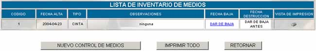
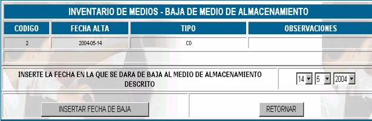

INVENTARIO DE MEDIOS
Se debe realizar un inventario de medios por
exigencia del manual de procedimientos de la empresa.
Esta opción muestra la siguiente pantalla
principal

Código; es el código asignado al medio en el momento el registro.
Fecha alta; especifica la fecha que se dio de alta al medio.
Observaciones; especifica las observaciones que se realizaron en el
momento del registro.
Nuevo control de medios; cuando se da de alta a un medio de almacenamiento,
se deben llenar los datos que se muestran en la siguiente pantalla:

Código; este campo especifica el código de inventario que se
asigna automáticamente por el sistema.
Fecha
alta; especifica la fecha que se
da de alta
Tipo; existen varios tipos de medios de almacenamiento,
escoja uno de ellos y regístrelo.
Observaciones; registre las observaciones que usted vea conveniente
en el momento de dar de alta un medio.
Fecha baja; especifica la fecha en que se dio de baja al medio,
si es que no se dio de baja al medio aún aparecerá activo el vinculo DAR DE BAJA, cuando usted quiera dar de baja a un
medio debido a su largo periodo de utilización o por otro motivo, haga click en
este vinculo y aparecerá la pantalla siguiente.

Insertar fecha de baja; inserte la fecha de baja y presione sobre el botón INSERTAR
FECHA DE BAJA

Una vez que usted de baja a un medio se
activará el vinculo DESTRUIR si usted
hace click en este vinculo usted podrá destruir el medio.
Presione INSERTAR
FECHA DE DESTRUCCIÓN si desea destruir el medio y RETORNAR para volver al control de medios y aparecerá marcada la
fecha de destrucción.
Vista de impresión; para obtener un reporte de un medio que se tiene en
inventario haga click en el icono 
Imprimir todo; genera un reporte de la lista de Inventario de
Medios, en formato de impresión.